Bucharest University of Economic Studies, Department of Statistics and Econometrics Romanian Academy, Institute for Economic Forecasting
A Romanian supplier that has promised its customers a fixed price for next year has sold electricity it does not yet own. If the wholesale price rises before it buys the energy, the margin disappears; a producer faces the mirror-image risk when prices fall. This lecture asks how such firms can fix today the price of energy delivered months later, how much of the risk a contract really removes, and what that protection costs. The answer relies on derivatives: forwards, futures and options on power, gas and carbon.
The question is not academic in Romania. In 2022 the day-ahead price for the year averaged 265.3 EUR/MWh, while the forward for 2022 baseload had been bought, on average, at 77.4 EUR/MWh: a supplier that hedged in time saved 1.65 million EUR per megawatt (MW), and a producer that sold forward gave up the same amount. The crisis then froze forward trading and brought regulated prices, which is why a hedging policy must exist before the next shock.
The lecture uses only real data: 2,298 forward auctions of the Romanian electricity and gas market operator (OPCOM), with 83.7 terawatt-hours (TWh) traded; hourly day-ahead prices for Romania, Hungary and Germany; gas, coal and carbon prices. From them it builds the forward curve, the margins of gas and coal plants, the hedge ratio with its confidence interval, option prices with the Black-76 formula, and a case study of a supplier and a producer in 2022, 2025 and 2026.
What you will be able to do
Explain forwards and futures on power and gas, physical or cash-settled, and read the forward curve.
Compute spark and dark spreads, clean of the price of the European Union (EU) emission allowance (EUA), and value a flexible plant as a strip of options.
Estimate the minimum-variance hedge ratio with its uncertainty, and measure basis risk and shape risk.
Price caps, floors and collars with the Black-76 formula, using a volatility estimated on real data.
Evaluate what a Romanian supplier and a producer gained or lost by hedging in 2022, 2025 and 2026.
Forwards, futures and the forward curveThis section describes the contracts available to a Romanian firm, physical forwards on OPCOM and cash-settled futures abroad, and reads the forward curve and the forward premium on OPCOM auction prices.
Spreads: the margins of power plantsA gas or coal plant earns the difference between the power price and the cost of its fuel and carbon, so its risk is a spread rather than a single price.
Hedge ratio, basis risk and shape riskA hedge rarely matches the exposure exactly: the contract may settle in another country, or on a flat band while the customer's consumption has a shape.
Options on energyAn option gives protection against high (or low) prices while keeping the gain if prices move the other way, at the cost of a premium paid today.
Case study: a Romanian supplier and a producerThis case study applies the instruments of the lecture to real 2026 prices: a supplier with a 1 MW fixed-price customer compares four hedging strategies, and a producer looks at what selling forward cost or saved in 2022, 2024 and 2025.
Wrap-upThe wrap-up tests the main tools of the lecture on real Romanian numbers and lists further reading.
AppendixThe appendix gives the derivations behind the hedge ratio and the Black-76 formula, and the conventions used to build the data.
Reasons for hedging: price exposures and the 2021–2022 crisis
Every firm in the power chain holds a price position, and the 2021–2022 crisis showed in Romania how large the gains and losses of being hedged or unhedged can be. This section defines the exposures and measures the lesson on real auction prices.
Real data only: Romanian forwards, spot prices, gas, carbon
Every number in the lecture comes from downloaded data. The forward contracts are the results of the OPCOM centralised market for bilateral contracts with extended auctions (PCCB-LE): 2,298 auctions with 83.7 TWh, from 12 May 2020 to 28 Oct 2026. Spot prices are the hourly prices of the day-ahead market, Piața pentru Ziua Următoare (PZU), for Romania (RO), Hungary (HU) and the Germany–Luxembourg bidding zone (DE-LU), published by OPCOM, the Hungarian Power Exchange (HUPX) and the European Power Exchange (EPEX SPOT), and collected through energy-charts.info of the Fraunhofer Institute for Solar Energy Systems (ISE) from the European Network of Transmission System Operators for Electricity (ENTSO-E).
Gas is the price at the Dutch Title Transfer Facility (TTF), monthly from the World Bank Pink Sheet and daily from New York Mercantile Exchange (NYMEX) futures via Yahoo Finance; coal also comes from the World Bank. The carbon price (EUA) comes from the auctions of the European Energy Exchange (EEX) and, later, from an exchange-traded commodity (ETC); the euro (EUR) to Romanian leu (RON) exchange rate and the euro short-term rate (€STR) come from the European Central Bank (ECB). The cut-off is 31 Oct 2026, the last complete month.
Two kinds of data are not free: power futures of EEX or of the Hungarian Derivative Energy Exchange (HUDEX), and option prices. The lecture does not invent them; where an option price is needed, it is computed from a model with an estimated volatility, and the text says so.
Every firm in the power chain holds a price position
A supplier that sells at fixed retail prices loses when the wholesale price rises; a producer loses when it falls. Their profits on a quantity of energy are
where \(Q\) is the energy in megawatt-hours (MWh), \(R\) the retail price, \(S\) the spot price at delivery, \(c\) the producer's cost and \(F\) the forward price fixed today, in EUR/MWh. A bought forward pays \(S-F\) per MWh, so adding it to the supplier's position removes \(S\) entirely: the hedged profit in (5.1) depends only on prices known today.
Firms differ by the sign of their exposure. A supplier at fixed prices and an industrial consumer are short power: they hedge by buying forward or by buying a cap. Hydro, nuclear, lignite and solar producers are long power: they hedge by selling forward or by buying a floor. A gas plant is long the spread, power minus gas and carbon, and must hedge all three prices together (Hull, 2022; Eydeland & Wolyniec, 2003).
In practice: fix the sign of your exposure first: a long firm that buys forward doubles its risk.
In 2022 the spot cost 3.4 times the forward bought earlier
The forward for 2022 baseload was traded in 150 OPCOM auctions. Its volume-weighted average price (VWAP) was 77.4 EUR/MWh, while the Romanian day-ahead price averaged 265.3 EUR/MWh in 2022, 3.4 times more. A supplier that had bought its 2022 energy forward saved 1.65 million EUR for each MW of constant consumption.
The timing of the purchase mattered almost as much as the decision to hedge. Contracts for 2022 traded at 54.4 EUR/MWh on average in 2020, at 61.5 in the first half of 2021 and at 136.7 in the second half, when the gas crisis had already lifted prices. A supplier that waited until late 2021 paid about twice as much as one that bought early, and still much less than the spot.
In practice: when you hedge matters: contracts bought late in 2021 cost twice as much.
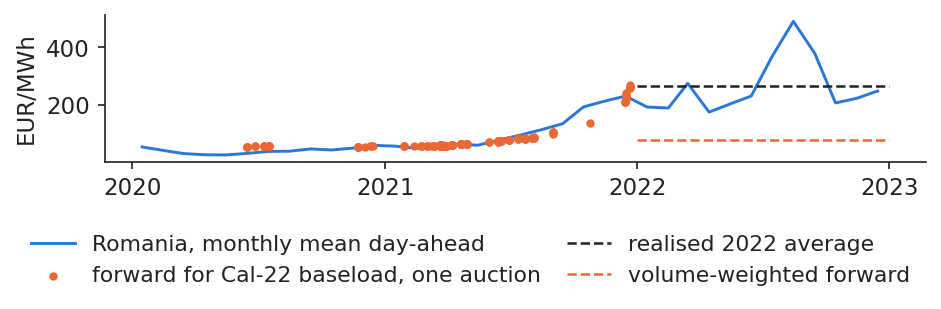
The monthly mean day-ahead price in Romania, 2020–2022, with each auction of the 2022 baseload forward (dots), the volume-weighted forward price and the realised 2022 average (dashed lines).
Source: OPCOM (PCCB-LE-flex results; day-ahead prices via energy-charts.info); ECB. Data: 150 auctions for 2022 baseload; spot 2020-2022.
A hedge is a transfer, not a gain created from nothing. Each MWh sold forward for 2022 went 187.9 EUR/MWh below the spot: producers that sold forward lost exactly what hedged suppliers saved. Forwards then overshot in the other direction: the calendar 2023 contract traded at up to 509.2 EUR/MWh on 17 Aug 2022, while the spot of 2023 averaged 103.7 EUR/MWh.
Romania answered with regulation. Government Emergency Ordinance (OUG) 27/2022 capped final prices, and OUG 153/2022 created the Centralised Electricity Purchase Mechanism (MACEE), in which OPCOM acted as single buyer at 450 lei/MWh for 2023–2024. Forward volume on OPCOM fell from 27.3 TWh in 2021 to 1.6 TWh in 2023. At EU level, the EU Agency for the Cooperation of Energy Regulators (ACER) kept the market design and flagged thin forward markets beyond three years (ACER, 2022).
In practice: write the hedging policy before the crisis: during it, nobody can agree on one.
Section summary
A forward fixes today the price of future delivery and moves money between buyer and seller. In 2022 it saved Romanian suppliers what it cost producers, and the crisis that followed dried up the forward market itself.
Forwards, futures and the forward curve
This section describes the contracts available to a Romanian firm, physical forwards on OPCOM and cash-settled futures abroad, and reads the forward curve and the forward premium on OPCOM auction prices. It ends with the question of whether forwards are, on average, an expensive or a cheap way to buy energy.
A power forward delivers constant MW over a whole period
where \(H\) is the number of hours of the delivery period (744 in a 31-day month, 8,760 in a year), \(S_h\) the day-ahead price of hour \(h\), \(\bar S\) their mean, \(q\) the power in MW and \(F\) the forward price; \(V_T\) is the value of the contract to the buyer at the end of the period.
Contracts differ by profile. The band covers all hours, Monday to Sunday (LD, OPCOM's product code), and accounts for 94% of the volume; the peak contract covers only the peak hours of working days. On 31 Oct 2026, OPCOM priced the year 2027 at 148.1 EUR/MWh, which for 1 MW means 8,760 MWh at that price, and the next month at 215.3 EUR/MWh (Benth et al., 2008).
In practice: price a customer's contract on the forward of its delivery period, not on today's spot.
A physical forward delivers the MWh at price \(F\); a cash-settled future pays only the gap between a reference average and \(F\), and the firm buys the energy on the spot market. The two are equivalent only under one condition:
\[F\cdot Q=\bar S Q-(\bar S^{\text{ref}}-F)Q \quad \text{only if } \bar S^{\text{ref}}=\bar S,\]
(5.3)
where \(\bar S^{\text{ref}}\) is the settlement index of the future (for example the German average price) and \(\bar S\) the average price the firm actually pays. When the two averages differ, the gap is basis risk, the subject of the fourth section.
In Romania, physical contracts are traded in the OPCOM PCCB-LE auctions and on the OPCOM continuous market for standardised bilateral contracts (PC-OTC); they carry no basis risk. Cash-settled futures are traded abroad, on EEX and HUDEX, and are cleared: the clearing house removes the counterparty risk but asks for margin payments in exchange (Hull, 2022).
In practice: physical when you need MWh in Romania; cash-settled when you need liquidity and can carry the basis.
Futures are marked to market daily: the hedge needs cash
where \(F_t\) is the settlement price of day \(t\) and \(Q\) the position in MWh. Over the life of the contract the payments add up to the same amount as a forward, but they arrive day by day. On top of them, the exchange asks for an initial margin computed with a value-at-risk (VaR) model, as in Lecture 4.
The NYMEX TTF contract for December 2026 illustrates the size of these flows: over 1,487 daily prices it moved between 15.1 and 103.9 EUR/MWh, and its largest daily move was 11.83 EUR/MWh, on 29 Aug 2022. For a position of 10 MW over 744 hours, that single day meant a margin call of 88,015 EUR. A firm that cannot pay such a call is forced to close the hedge exactly when it needs it most.
In practice: size a credit line for the worst daily move before hedging on an exchange.
The OPCOM forward market is concentrated on the sell side. Three producers sell 83% of the volume: the lignite producer 32%, the nuclear producer 30% and the hydro producer 21%. Calendar-year products account for 80% of the baseload volume, so most hedging in Romania is done one year at a time.
Volume rose to 27.3 TWh in 2021 and collapsed in 2022–2023, when price caps and the MACEE single-buyer mechanism replaced bilateral trading. Liquidity has since returned only in part, which means that a large purchase can move the auction price.
In practice: liquidity is thin: spread purchases over many auctions.
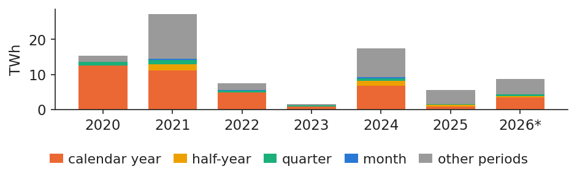
Energy contracted per year in OPCOM forward auctions, in TWh, split by product (calendar year, half-year, quarter, month, other periods); 2026 runs to the cut-off.
Source: OPCOM, PCCB-LE-flex results; ECB (EUR/RON). Data: 2,298 traded auctions, 2020-05-12 to 2026-10-31; *2026 to the cut-off.
Gas can be stored, which ties its forward price to the spot through the cost of carrying it; power cannot be stored, so its forward is the expected spot plus a risk premium:
where \(F_{t,T}\) is the forward price at time \(t\) for delivery at \(T\), \(S_t\) the spot price, \(r\) the interest rate, \(u\) the storage cost, \(y\) the convenience yield, \(\E_t[\bar S_T]\) the expected average spot price over the delivery period and \(\pi_{t,T}\) the risk premium. A curve above the spot (\(F>S\)) is in contango; a curve below it (\(F<S\)) is in backwardation (Fama & French, 1987; Bessembinder & Lemmon, 2002).
On 30 Oct 2026, the NYMEX TTF gas contract for December 2026 traded at 103.9 EUR/MWh and the one for May 2027 at 78.1: the winter premium over summer pays for storage. Romanian power was in backwardation: October spot 239.3, first quarter of 2027 at 176.7, the year 2027 at 148.1 EUR/MWh. The market expects the price spike to fade.
In practice: never put today's spot into next year's budget: use the curve.
The Romanian forward curve slopes down from a high spot
The forward curve is built from the 85 OPCOM auctions of September and October 2026. It contains 7 baseload products; their VWAP per delivery period is 215.3 EUR/MWh for the next month, 176.7 for the first quarter of 2027 and 148.1 for the year 2027. Each horizontal segment shows the price at which energy for that period can be locked in today.
The chart places the curve next to the realised monthly spot of the previous two years, which makes the backwardation visible: the market prices the next months near the current high spot and the following year much lower.
In practice: a 2027 offer starts from 148 EUR/MWh, not from the October spot.
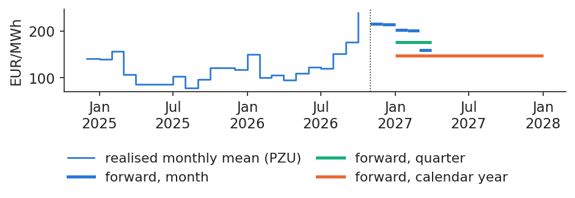
The realised monthly mean day-ahead price in Romania (step line) and the forward prices for each delivery period (horizontal segments: month, quarter, half-year, year); the dotted vertical line marks the cut-off.
Source: OPCOM (PCCB-LE-flex results; day-ahead prices via energy-charts.info); ECB. Data: 85 auctions 2026-09-01 to 2026-10-31.
A forward is the price of certainty, not a forecast that reliably hits the realised price. The chart shows every auction of each calendar-year product on its trade date, and the realised mean of the year as a thick line. For 2021 the VWAP was 51.3 EUR/MWh and the realised spot 111.4; for 2023 the forward averaged 172.5 against a realised 103.7, because it was bought at the height of the crisis; for 2025 the two were close, 102.1 against 108.2 EUR/MWh.
The errors were large and of both signs. A hedge fixed the cost of each year, but the level at which it was fixed depended on the moment of purchase.
In practice: the forward is the price of certainty, not a forecast to rely on in a crisis.
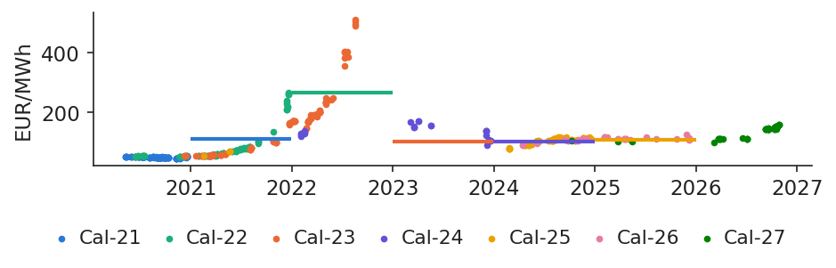
Prices of the calendar-year baseload forwards on OPCOM by auction date (dots, one colour per delivery year) and the realised mean spot price of each delivery year (thick lines).
Source: OPCOM (PCCB-LE-flex results; day-ahead prices via energy-charts.info); ECB. Data: calendar-year baseload auctions to 2026-10-31; thick line = realised mean.
If buyers fear spikes more than sellers fear slumps, forwards should trade above the expected spot, and buyers would pay a premium on average. The premium can only be measured after delivery:
where \(i\) is the delivery month, \(F_i\) the VWAP of the monthly band bought in the month before delivery, \(\bar S_i\) the realised mean spot price of month \(i\), \(\bar\pi\) the mean of the \(\hat\pi_i\) and \(\widehat{\text{se}}_{\text{HAC}}\) its heteroskedasticity- and autocorrelation-consistent (HAC) standard error, Newey–West with 3 lags.
Over 30 delivery months bought one month ahead, the mean premium is +5.2 EUR/MWh, with \(t\) = 0.42 and \(p\) = 0.68: no evidence of a premium. Since 2023 it is +24.5 with \(t\) = 1.51, still not significant. Across all products, weighted by volume, the premium was −55.8 EUR/MWh for deliveries up to 2021, −166.5 for 2022 and +29.7 from 2023: the sign depends on the period (Bessembinder & Lemmon, 2002; Redl et al., 2009).
In practice: hedging is cheap on average; its real cost is the upside you give up.
Month by month, forward minus spot swings both ways
The chart shows the premium of (5.6) for each of the 30 delivery months. Its median is −0.2 EUR/MWh, close to zero. The deep negative bars are the surprises of 2021–2022, when the spot rose far above what the forward had priced a month earlier; they are not a stable discount that a buyer could count on.
For a manager this means that a hedge should not be judged by whether it made money after the fact. In some months the forward was above the spot, in others below; what it always did was remove the uncertainty of the cost.
In practice: judge a hedge by the risk it removed, not by its ex-post profit.
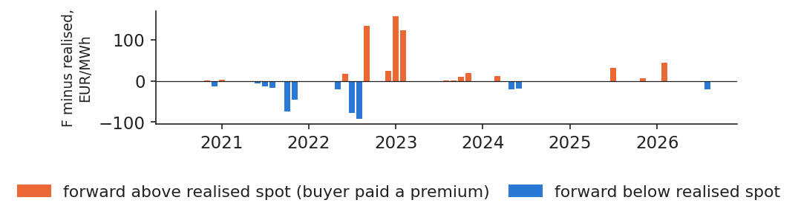
Forward price of the monthly baseload bought one month ahead minus the realised monthly mean spot, in EUR/MWh, per delivery month; bars above zero mean the buyer paid a premium.
Source: OPCOM (PCCB-LE-flex results; day-ahead prices via energy-charts.info); ECB. Data: 30 delivery months, 2020-08 to 2026-08.
Romanian forwards are physical, concentrated on a few sellers and mostly yearly. The curve is a price for certainty: it moves with the market, and its premium over the realised spot has no stable sign.
Spreads: the margins of power plants
A gas or coal plant earns the difference between the power price and the cost of its fuel and carbon, so its risk is a spread rather than a single price. This section computes the clean spark and clean dark spreads in Romania and Germany and shows why a flexible plant is worth more than its mean spread.
A gas plant sells 1 MWh of power, burns \(1/\eta_g\) MWh of gas and pays for the CO\(_2\) it emits. Its margins are the spark spread (SS) and the clean spark spread (CSS):
where \(P\) is the power price in EUR/MWh, \(G\) the gas price in EUR per MWh thermal, \(\eta_g\) the efficiency of the gas plant (0.50, assumed), \(e_g\) the emission factor of gas, 0.202 t CO\(_2\) per MWh thermal according to the Intergovernmental Panel on Climate Change (IPCC, 2006), and \(A\) the EUA price in EUR per tonne.
In Romania in October 2026, power cost 239.3 EUR/MWh, gas cost 173.6 per MWh of power (= 86.8/0.5) and carbon 33.3: the spark spread was +65.7 and the clean spark spread +32.4 EUR/MWh. The yearly mean CSS was −32.2 in Romania in 2022 and +5.8 in 2025; in Germany it was −62.2 and −13.1 (Deng et al., 2001).
In practice: a gas producer hedges the spread: sell power, buy gas and EUA forward together.
Dark spreads and the carbon price that favours gas over coal
Coal emits more CO\(_2\) per MWh than gas, so a high EUA price pushes coal plants behind gas plants in the merit order. The clean dark spread (CDS) and the switching price are
where \(C\) is the coal price in EUR per MWh thermal (the price in USD per tonne divided by the EUR/USD rate and by 6.978 MWh per tonne), \(\eta_c\) the efficiency of the coal plant (0.38, assumed), \(e_c\) the emission factor of coal, 0.341 t CO\(_2\) per MWh thermal, and \(A^{*}\) the EUA price at which CSS equals CDS; the other symbols are as in (5.7).
In October 2026 coal cost 12.8 EUR per MWh thermal and the clean dark spread in Romania was +131.7 EUR/MWh. The switching price \(A^{*}\) was 283.7 EUR/t, far above the EUA price of 82.4: with gas this expensive, coal remained cheaper. Two caveats apply: lignite, the Romanian fuel, has no market price, so coal is proxied by the South African export price; and the EUA is the EEX auction price, replaced by the ETC from January 2026 (World Bank).
In practice: a coal producer selling power forward should buy EUA forward with it.
The chart follows the monthly spreads from January 2015 to October 2026. The clean spark spread was negative in 67 of 138 months in Romania and in 121 in Germany; on average it was higher in Romania by 13.9 EUR/MWh, reflecting higher Romanian power prices for the same gas and carbon prices.
A mean spread close to zero, or even negative, does not make a gas plant worthless. A plant does not have to run in every hour: it runs only when the spread is positive, and the next two blocks measure what that flexibility is worth.
In practice: a mean spread near zero does not make a plant worthless: it runs only in good hours.
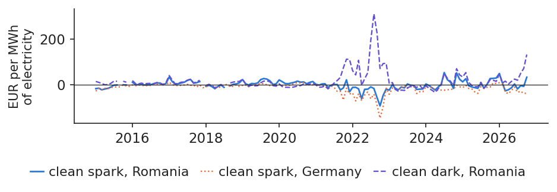
Monthly clean spark spread in Romania and Germany and clean dark spread in Romania, in EUR per MWh of electricity, January 2015 to October 2026.
Source: energy-charts.info; World Bank (TTF, coal); EEX and SparkChange ETC (EUA); ECB. Data: monthly, 2015-01 to 2026-10.
where \(CSS_h\) is the clean spark spread of hour \(h\) for 1 MW, with gas and EUA at their monthly means. The left side is the margin of a flexible plant, the right side that of a must-run plant that produces in every hour. The calculation ignores start-up costs, so it is an upper bound.
Over the last 12 months, the hourly spread in Romania was positive in 58% of hours; a must-run plant would have earned 38,095 EUR per MW and a flexible one 235,494. In Germany the spread was positive in 41% of hours: must-run −165,206, flexible 112,724 EUR per MW. Flexibility turns a loss into a profit (Deng et al., 2001; Eydeland & Wolyniec, 2003).
In practice: value a gas plant or a battery as options, never as a mean spread times 8,760 h.
Sorted hourly spreads: the value lies in the best hours
Sorting the hourly spreads of the last 12 months from the highest to the lowest gives a duration curve. The area above zero is the value of the option to run: it is earned in a minority of very profitable hours. At equal gas and carbon prices, Romania has more profitable hours than Germany.
For hedging, this shape matters: the plant's income comes from the peak hours, so a band contract, which sells all hours equally, does not match it.
In practice: hedge a flexible plant with peak products, not with a band.
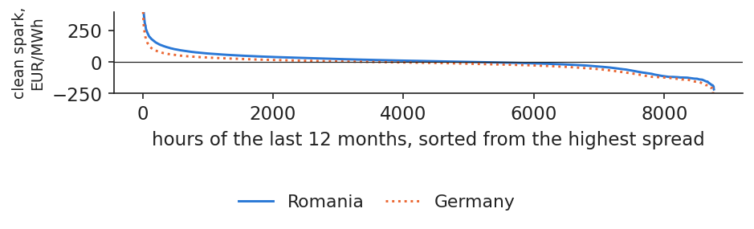
Hourly clean spark spreads of the last 12 months, sorted from the highest, for Romania and Germany, in EUR/MWh.
Source: energy-charts.info; World Bank (TTF, coal); EEX and SparkChange ETC (EUA); ECB. Data: 2025-11-01 to 2026-10-31, hourly.
A thermal plant is exposed to the spread between power, fuel and carbon. Its mean spread understates its value, because a flexible plant is a strip of hourly options that pays only in good hours.
Hedge ratio, basis risk and shape risk
A hedge rarely matches the exposure exactly: the contract may settle in another country, or on a flat band while the customer's consumption has a shape. This section estimates how many contracts to hold, measures the risk left behind by Hungarian and German futures, and prices the shape of load and solar output.
The minimum-variance hedge ratio is a regression slope
where \(\Delta S\) and \(\Delta F\) are the monthly changes of the exposure and of the hedge, \(\sigma_S\) and \(\sigma_F\) their standard deviations, \(\rho\) their correlation, \(a\) the intercept and \(\varepsilon_t\) the error of the regression in (5.11). Hedge effectiveness (HE) is the share of the variance removed. \(h^{*}\) is estimated by ordinary least squares (OLS); the derivation is in Appendix A (Johnson, 1960; Ederington, 1979).
As instruments we use the monthly mean prices of Hungary and of DE-LU, because a cash-settled future ends at its zone's monthly mean. The sample has 133 months, February 2015 to October 2026. The uncertainty of \(h^{*}\) is measured twice: with a HAC standard error with 3 lags, and with a block bootstrap of 6-month blocks and 2,000 draws.
In practice: a hedge ratio without a confidence interval is a guess.
Cross-border hedges: Hungarian contracts are more effective than German ones
The Romanian price follows the Hungarian one closely: \(h^{*}\) is 0.966 and the regression explains 98% of the variance of Romanian monthly changes. The German price is a weaker hedge: \(h^{*}\) = 0.875 with \(R^2\) = 0.80, so about a fifth of the variance remains.
Hedge
\(h^{*}\)
HAC s.e.
bootstrap 95%
\(R^2\)
\(h^{*}\) 2015–20
variance cut from 2021
Hungary
0.966
0.023
[0.93; 1.03]
0.98
0.92
97.9%
Germany
0.875
0.049
[0.73; 1.01]
0.80
0.91
81.1%
The last two columns test the hedge out of sample: the ratio estimated on 2015–2020 is applied from 2021 onwards. Even through the crisis, the Hungarian hedge removed 97.9% of the variance and the German one 81.1%. Both bootstrap intervals contain 1, so a one-for-one hedge is statistically acceptable for either.
In practice: hedge with Hungarian futures before German ones.
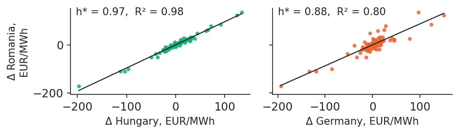
Monthly changes of the Romanian day-ahead price against those of Hungary (left) and Germany (right), in EUR/MWh, with the fitted hedge-ratio line.
Source: energy-charts.info: day-ahead prices of OPCOM, HUPX, EPEX SPOT. Data: monthly changes, 2015-02 to 2026-10.
where \(X\) is the zone of the future (HU or DE-LU), \(\bar S^{\text{RO}}\) and \(\bar S^{X}\) the realised monthly mean prices in Romania and in \(X\), \(F^{X}_0\) the price of the future today and \(h\) the hedge ratio. The term in brackets is the basis \(b\); with \(h=1\) it is simply the monthly price gap between Romania and \(X\), which is unknown when the hedge is set.
Against Hungary the basis is small: its mean is −2.1 EUR/MWh and its standard deviation 4.5, and the two countries had equal prices in 56% of hours in 2021. Against Germany it is large: mean +13.9, standard deviation 15.2, and since 2023 a mean of +18.7 EUR/MWh (Hull, 2022).
In practice: a German hedge costs the German forward plus about 19 EUR/MWh: price it in.
The basis became more volatile after 2021, though RO and HU often share a price
The standard deviation of the monthly basis to Germany was 7.6 EUR/MWh before 2021 and 18.2 after. The right panel counts the hours in which Romania had the same price as Hungary or Germany, which happens when the cross-border lines are not congested and market coupling equalises prices. The coupling steps were the Interim Coupling of 17 June 2021 and the Core flow-based coupling of 8 June 2022 (ENTSO-E, 2021).
When the lines are congested, prices separate and the basis opens. Basis risk is therefore, in practice, the risk of congestion between bidding zones.
In practice: prices converge only without congestion: basis risk is congestion risk.
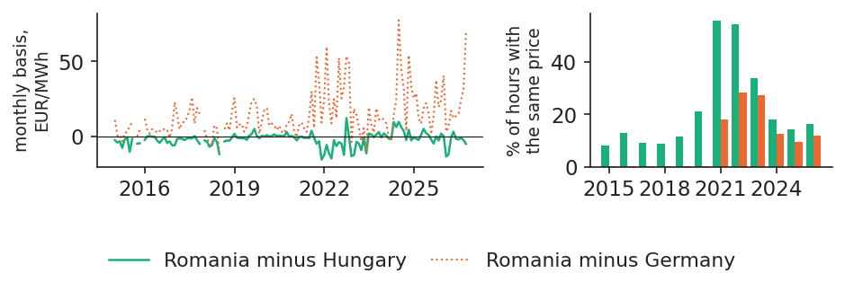
Left: monthly basis, Romania minus Hungary and Romania minus Germany, in EUR/MWh; right: share of hours per year with the same price (absolute difference below 0.01 EUR/MWh).
Source: energy-charts.info: day-ahead prices of OPCOM, HUPX, EPEX SPOT. Data: 2015-01 to 2026-10; right: |difference| < 0.01 EUR/MWh.
A band contract covers the same MW in every hour, but load is higher in expensive hours and solar output in cheap ones. The shape factors measure the gap:
where \(L_h\) is Romanian load and \(Q_h\) solar output in hour \(h\), \(P_h\) the price of hour \(h\) and \(\bar P\) the simple mean price of the year. A factor above 1 means the profile costs more than the band; below 1, that it is worth less.
A supplier serving the national load profile paid a factor of 1.039 in 2019 and 1.066 in 2025, which in 2025 meant +7.1 EUR/MWh over the band. A solar producer's capture factor was 1.045 in 2019 but only 0.596 in 2025: its output sold 43.7 EUR/MWh below the band, because so many solar plants now produce at the same hours.
In practice: price a solar power purchase agreement (PPA) at the capture factor, not at the band forward.
Value of the solar and load profiles relative to baseload
The chart follows the two factors of (5.13) year by year. The solar capture factor fell to 0.596 in 2025, as midday prices dropped with the growth of solar capacity; the load-weighted price rose to 7.1 EUR/MWh above the band in 2025. The band forward is therefore a poor hedge for both a supplier and a solar producer: one is under-hedged in expensive hours, the other over-hedged in cheap ones.
In practice: buy band for the base of the portfolio, peak and hourly products for the shape.
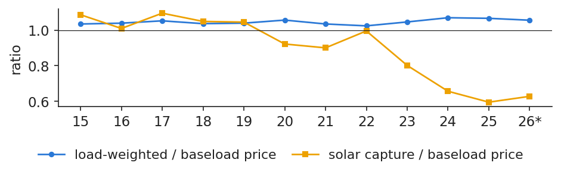
Yearly ratios of the load-weighted price and of the solar capture price to the baseload price in Romania, from 2015 to the cut-off; the horizontal line marks a ratio of 1.
Source: energy-charts.info: OPCOM prices; ENTSO-E load and solar output. Data: hourly, 2015 to 2026-10-31; *to the cut-off.
Hungarian contracts hedge Romanian prices almost perfectly, German ones leave a fifth of the variance and a costly basis. A band also misses the shape of consumption and of solar output, which has to be priced separately.
Options on energy
An option gives protection against high (or low) prices while keeping the gain if prices move the other way, at the cost of a premium paid today. This section defines caps, floors and collars, prices them with the Black-76 formula on the 2027 Romanian band, and shows that the key input, volatility, has to be estimated and differs by source.
where \(F_T\) is the forward price at expiry \(T\), \(K\) the strike, \((x)^+=\max(x,0)\), \(c\) and \(p\) the call and put premiums, \(K_c\) the strike of the call and \(K_p<K_c\) that of the put. The first payoff is a call, the second a put; a collar combines buying a call at \(K_c\) with selling a put at \(K_p\), so the put premium finances the call (Hull, 2022).
A supplier buys a cap (a call), a producer buys a floor (a put), and both can use a low-cost collar: the supplier buys a call and sells a put, the producer does the reverse. In Romania there are no listed power options; caps exist inside bilateral contracts and PPAs.
In practice: buy a cap when a spike would break the firm, not when it would merely hurt.
Black-76 prices an option on a forward from five inputs
where \(C\) and \(P\) are the call and put premiums, \(F\) the forward price, \(K\) the strike, \(T\) the time to expiry in years, \(r\) the continuously compounded interest rate, \(\sigma\) the annual volatility of \(\ln F\) and \(\Phi\) the standard normal distribution function. The derivation is in Appendix B.
For the 2027 Romanian band the inputs are \(F\) = 148.12 EUR/MWh (the OPCOM VWAP), \(T\) = 45 days, \(r\) = 2.44% (€STR) and \(\sigma\) = 0.220, estimated in the next block. An at-the-money option, \(K=F\), costs 4.55 EUR/MWh, call and put alike. A cap at 1.1 \(F\) costs 0.63 and a floor at 0.9 \(F\) costs 0.43 EUR/MWh.
In practice: ask the bank which volatility it used: the premium grows almost linearly with \(\sigma\).
Estimating volatility for option pricing: estimates differ across data sources
Three estimates from real data give very different answers. The first uses the Romanian yearly forwards. Auctions are irregular, so the variance is computed per unit of time:
where \(\Delta\ln F_k\) is the log change of the forward price between two consecutive auction days \(k\), at most 30 days apart, and \(\Delta t_k\) the time between them in years. On 49 pairs of auction days this gives \(\hat\sigma\) = 0.220.
The second uses the TTF future for January 2027: over the last 60 trading days \(\hat\sigma\) = 0.499, and the at-the-money call is worth 10.30 EUR/MWh. The third compares the realised monthly average with the forward bought before it: the standard deviation of \(\ln(\bar S/F)/\sqrt T\) is 0.668 over 153 auctions.
They differ for good reasons. A year averages 8,760 hours and is far calmer than a month; gas has its own crisis in 2026; and there is no free implied volatility for Romania. A better approach is to forecast volatility with the generalised autoregressive conditional heteroskedasticity (GARCH) models of Lecture 3.
In practice: match the volatility to the underlying: year, quarter or month.
Near contracts move more: the Samuelson effect in TTF
Contracts close to delivery react more to news than distant ones, because a shock to today's supply affects the near month fully and the distant month only partly (Samuelson, 1965). The chart compares the 60-day volatility of two TTF contracts. From 1 Nov 2025 to 31 Oct 2026 the December 2026 contract had an annualised volatility of 63%, the May 2027 contract 48%. In 2022, at the peak of the crisis, both were near 66%.
For option pricing this means that a single volatility number is not enough: the same underlying has a higher volatility the closer it is to delivery.
In practice: an option close to delivery needs a higher volatility.
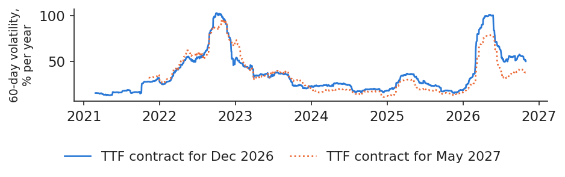
Rolling 60-trading-day volatility, in percent per year, of the NYMEX TTF futures for December 2026 and May 2027.
Source: Yahoo Finance, NYMEX TTF futures. Data: daily closes to 2026-10-31, rolling 60 trading days.
where \(\Delta_C\) and \(\Delta_P\) are the deltas of the call and the put, \(\varphi\) the standard normal density, \(\mathcal V\) the vega, quoted per volatility point (0.01), and the other symbols are as in (5.16) and (5.17). The last identity is put–call parity.
At \(K=F\) with \(\sigma\) = 0.220, \(d_1\) = 0.039, \(\Delta_C\) = 0.514 and \(\Delta_P\) = −0.483; vega is 0.207 EUR/MWh, and \(C=P\), as parity requires when \(K=F\). A cap at 1.1 \(F\) has a delta of 0.116: it behaves like about a tenth of a MWh forward. Its premium for 1 MW over a year is 5,519 EUR (Black, 1976; Hull, 2022).
In practice: the seller of a cap hedges by holding delta MWh forward and rebalancing.
The chart compares the effective price a supplier pays for the 2027 band under each strategy, as a function of the forward price at expiry. Unhedged, it pays the market. With the forward, it pays 148.1 EUR/MWh whatever happens. With a cap at 162.9, it pays the market price up to the strike plus a premium of 0.63 EUR/MWh. A collar between 133.3 and 162.9 costs only 0.20 EUR/MWh net, because the sold put finances most of the call, but it gives up the gain below 133.3.
The Black-76 prices are a benchmark, not the price a bank would quote: price spikes and options on monthly averages (Asian options) break its assumptions (Weron, 2008).
In practice: a near-zero-cost collar lets a supplier sell a capped retail price.
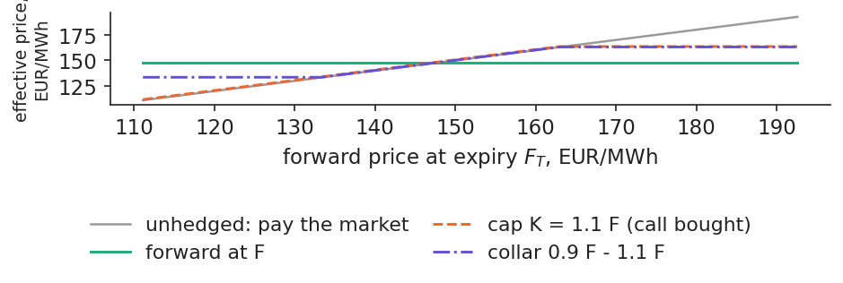
Effective price of the 2027 band, in EUR/MWh, against the forward price at expiry \(F_T\): unhedged, forward at \(F\), cap at \(K\) = 1.1 \(F\) and collar 0.9 \(F\) – 1.1 \(F\).
Source: OPCOM PCCB-LE-flex; ECB (€STR); Black-76. Data: F = Cal-2027 baseload, auctions 2026-09-01 to 2026-10-31.
Options turn a fixed price into insurance: a cap protects a supplier, a floor a producer, and a collar does both at a low cost. Their price depends above all on the volatility, which must match the contract being hedged.
Case study: a Romanian supplier and a producer
This case study applies the instruments of the lecture to real 2026 prices: a supplier with a 1 MW fixed-price customer compares four hedging strategies, and a producer looks at what selling forward cost or saved in 2022, 2024 and 2025. It closes with a hedging policy that a board could adopt.
Case study: a supplier with a 1 MW fixed-price customer in 2026
The supplier has sold 1 MW flat for all of 2026 at a fixed price, and the energy is still to be bought. The result is measured on the 10 months delivered up to October 2026, with real prices, for four strategies:
Unhedged: buy each month at the realised mean spot price.
100% forward: buy the OPCOM band for 2026, at a VWAP of 111.70 EUR/MWh over 31 auctions.
50% forward, 50% spot.
Monthly caps bought on 15 Dec 2025 with strike \(K\) = 120.16 EUR/MWh (the VWAP of the last 5 auctions), priced with Black-76 and \(\sigma\) = 0.668.
For each strategy the case study reports the mean cost, its month-to-month standard deviation, the worst month and the total cost per MW.
In practice: a supplier's risk committee should see exactly this table every month.
Case study: in 2026 the forward beat the spot in 6 of 10 months
The chart shows the monthly cost of each strategy. Prices rose during the year, and the spot reached its peak of 239.3 EUR/MWh in October 2026; in 6 of the 10 months the forward was cheaper than the spot. The caps paid out in 5 of 10 months, when the monthly spot exceeded the strike, but their premium was paid every month.
In practice: a cap costs its premium every month, also when it pays nothing.
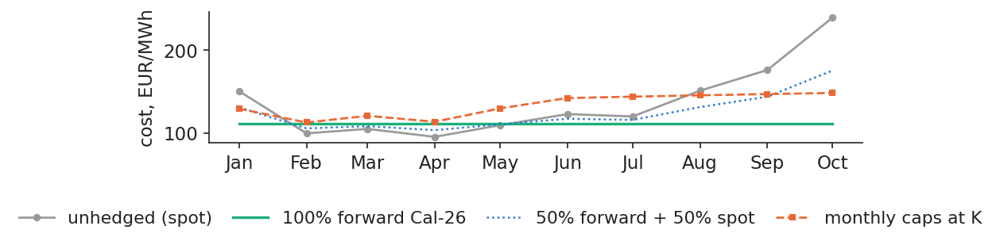
Monthly cost of 1 MW of baseload in 2026, in EUR/MWh, for four strategies: unhedged (spot), 100% forward, 50% forward and 50% spot, and monthly caps at strike \(K\).
Source: OPCOM (PCCB-LE-flex results; day-ahead prices via energy-charts.info); ECB. Data: 2026-01 to 2026-10; 1 MW baseload.
The table summarises the four strategies, weighted by the hours of each month.
EUR/MWh
mean
st. dev.
worst
EUR/MW
spot
137.5
44.4
239.3
1,002,956
100% forward
111.7
0.0
111.7
814,946
50% forward
124.6
22.2
175.5
908,951
caps
133.6
13.9
148.5
975,020
The full forward hedge saved 188,010 EUR per MW and removed all month-to-month variation. The caps cost an average premium of 20.4 EUR/MWh a month, but still saved 27,936 EUR per MW net, and they cut the worst month from 239.3 to 148.5 EUR/MWh. The half hedge sits in between.
This is not a general verdict. In 2026 prices rose after the hedge was placed; in a year of falling prices the forward costs more than the spot, and the caps would lose their premium.
In practice: set the hedged share by policy (e.g. 60–80% bought in layers), not by a price view.
For a producer the picture is reversed. In 2025, 101 auctions sold the band at a VWAP of 102.1 EUR/MWh, while the spot averaged 108.2: selling forward earned 6.0 EUR/MWh less than the spot, or 52,797 EUR per MW-year. That is the price of a fixed revenue. In 2022 the same decision cost 187.9 EUR/MWh.
The summer of 2024 shows the opposite risk for buyers. The third-quarter contract was bought at 90.0 EUR/MWh and delivered at 127.4; July alone averaged 145.1. The most expensive hour cost 916.7 EUR/MWh, on 18 Jul 2024 at 20:00 Central European Time (CET) (Andrei, Pele & Cramer, 2026).
The lesson is that a hedge transfers value between the two sides of the market. Its benefit is that cash flows become predictable, and lenders pay for that predictability.
In practice: a producer with debt should sell forward even when it expects higher prices.
The lecture can be summarised as a hedging policy in four parts:
Exposure: measure the net position per month and per profile (band, peak, solar), and treat volume risk separately, since demand hardly reacts to price (Proșcanu, Proșcanu & Pele, 2025).
Instruments: use OPCOM forwards first, then Hungarian, then German futures; buy caps for the tail, not for all the volume.
Execution: buy in layers over 12–24 months, and keep a liquidity buffer for margin calls.
Control: set limits on the open position and on VaR (Lecture 4), and report the hedged cost and its variance.
In practice: the board approves the policy, traders execute it, risk management measures it.
Section summary
In 2026 the forward cut both the cost and the risk of a Romanian supplier, and caps cut the risk at a premium; in 2025 a producer paid a small price for a fixed revenue. Because the sign of the gain changes from year to year, the hedged share must be set by policy.
Wrap-up
The wrap-up tests the main tools of the lecture on real Romanian numbers and lists further reading.
A Romanian supplier hedged July 2024 with German baseload futures bought at \(F\). July averaged 67.7 EUR/MWh in Germany and 145.1 in Romania. What did it pay per MWh? Answer: it bought at 145.1 in Romania and received from the future the difference between 67.7 and \(F\), so its net cost was \(F\) + 77.4 EUR/MWh, the largest monthly basis in our data.
Our estimate for Hungary is \(h^{*}\) = 0.966 with a bootstrap interval [0.93; 1.03]. A 20 MW exposure needs how many MW of Hungarian futures? Answer: 20 × 0.966 = 19.3 MW; since 1 lies inside the interval, a one-for-one hedge of 20 MW is statistically as good.
In October 2026 power cost 239.3 EUR/MWh, gas 86.8 EUR/MWh and the EUA 82.4 EUR/t, with an efficiency of 50% and 0.202 t CO\(_2\) per MWh thermal. Did a gas plant earn money on average? Answer: fuel costs 86.8/0.5 = 173.6 and carbon 0.404 × 82.4 = 33.3, so the clean spark spread is +32.4 EUR/MWh: yes, even before choosing the best hours.
The 2027 band trades at 148.1 EUR/MWh and a cap at 162.9 costs 0.63 EUR/MWh. What does the supplier pay if the forward ends at 1.3 \(F\), and at 0.9 \(F\)? Answer: at 1.3 \(F\) it pays the strike, 162.9, plus the premium; at 0.9 \(F\) it pays the market price plus the premium, since the cap is not exercised.
A forward turns an unknown spot into a known price. In 2022 it saved a Romanian supplier 1.65 million EUR per MW, and cost producers that sold forward the same amount. The practical rules of the lecture are to hedge Romania with Hungarian contracts before German ones, to price the shape of consumption and of solar output, and to match the volatility to the underlying when pricing an option. Lecture 6 follows.
Three recent papers from our group, at the Bucharest University of Economic Studies and the Romanian Academy, Institute for Economic Forecasting, study Romanian power risk:
The summer 2024 price spike (Andrei, Pele & Cramer, 2026). The paper asks which intervention would have lowered Romanian prices most in June–July 2024. It uses a random forest on hourly ENTSO-E data with 147 counterfactual scenarios, checked against a ridge regression. A 10% reduction of load was the most effective measure; the peak came at night, so solar could not help, and storage is the enabling asset.
Systemic risk in the EU energy sector (Toma, Dima, Grecu, Pele & Lessmann, 2026). The paper builds the Energy Financial Risk Meter, a least absolute shrinkage and selection operator (LASSO) quantile regression on the daily returns of 100 European energy companies. The index captures the 2020 pandemic and the 2022 war, and shows a geopolitical-to-energy risk channel switching on.
Demand barely reacts to price (Proșcanu, Proșcanu & Pele, 2025). Using Granger causality and vector autoregressions on Romanian consumption and prices, the paper finds that consumption is inelastic and drives price, not the reverse, so volume cannot hedge price risk.
The findings are as stated in the papers; the numbers on the other slides come from our own data.
where the symbols are as in (5.10). The second derivative, \(2\Var(\Delta F)>0\), so \(h^{*}\) is a minimum, and (5.22) shows that the share of variance removed is \(\rho^2\), the hedge effectiveness. \(h^{*}\) is the OLS slope of \(\Delta S\) on \(\Delta F\), with a HAC variance (Newey–West, Bartlett kernel, 3 lags).
The moving-block bootstrap draws blocks of 6 consecutive months with replacement until it has \(n\) months, the sample size, recomputes \(h^{*}\), and repeats this 2,000 times. The 95% interval is given by the 2.5% and 97.5% percentiles; the blocks keep the autocorrelation of the monthly changes. A dynamic hedge ratio, \(h_t^{*}=\Cov_{t-1}/\Var_{t-1}\), can be obtained from a bivariate GARCH model (Lecture 3), with the covariance and variance forecast for period \(t\) from information up to \(t-1\) (Johnson, 1960; Ederington, 1979; Kroner & Sultan, 1993).
Appendix B: from a driftless forward to the Black-76 formula
where \(W_t\) is a standard Brownian motion, \(F_0\) the forward price today and the other symbols are as in (5.16). The result follows from two lognormal moments: \(\E[F_T\mathbf 1_{F_T>K}]=F_0\Phi(d_1)\) and \(\Pr(F_T>K)=\Phi(d_2)\) (Black, 1976).
Two extensions matter for energy. An option to exchange gas for power is priced with Margrabe's formula (Margrabe, 1978), with the volatility \(\sigma^2=\sigma_P^2+\sigma_G^2-2\rho\sigma_P\sigma_G\), where \(\sigma_P\) and \(\sigma_G\) are the volatilities of power and gas and \(\rho\) their correlation; with a strike, such as a clean spark spread with fixed costs, Kirk's approximation is used in practice. And spot power reverts to its mean: the one-factor model of Schwartz (1997) gives forward volatilities that fall with maturity, consistent with the Samuelson effect.
Forward prices: one closing price per OPCOM session; the quantity on the initiator side; lei converted with the ECB EUR/RON fixing of the auction day (the last fixing on or before it). Only standard periods are used: month, quarter, half-year and calendar year, baseload unless stated.
Realised spot: the mean of the daily day-ahead base prices of the delivery period, in CET days, computed only when every day is present.
Fuels and carbon: coal of 6,000 kcal/kg equals 6.978 MWh thermal per tonne; gas emits 0.202 and hard coal 0.341 t CO\(_2\) per MWh thermal (IPCC 2006: 56.1 and 94.6 t per terajoule, TJ). The EUA is the monthly mean of EEX auctions up to January 2026, then the SparkChange ETC; the ratio of the auction price to the ETC price was close to 1 in 2021–2025.
Hours: hour-equivalents are used, so a 15-minute interval counts as 0.25 h (since 1 October 2025).
Abbreviations
ACER
European Union Agency for the Cooperation of Energy Regulators
CDS
clean dark spread
CET
Central European Time
CSS
clean spark spread
DE-LU
Germany–Luxembourg bidding zone
ECB
European Central Bank
EEX
European Energy Exchange
ENTSO-E
European Network of Transmission System Operators for Electricity
OPCOM continuous market for standardised bilateral contracts
PCCB-LE
OPCOM centralised market for bilateral contracts, extended auctions
PPA
power purchase agreement
PZU
Piața pentru Ziua Următoare (day-ahead market)
RO
Romania (bidding zone)
RON
Romanian leu
SS
spark spread
€STR
euro short-term rate
TJ
terajoule
TTF
Title Transfer Facility (Dutch gas hub)
TWh
terawatt-hour
USD
United States dollar
VaR
value at risk
VM
variation margin
VWAP
volume-weighted average price
References
ACER (2022). ACER's Final Assessment of the EU Wholesale Electricity Market Design. Ljubljana, April 2022. acer.europa.eu
Andrei, A.-V., Pele, D.-T. & Cramer, A.-A. (2026). Evaluating intervention effectiveness during extreme price events: A counterfactual analysis of Romania's 2024 energy crisis. Proceedings of the International Conference on Business Excellence, 20(1), 84–103. doi:10.2478/picbe-2026-0013
Benth, F. E., Šaltytė Benth, J. & Koekebakker, S. (2008). Stochastic Modeling of Electricity and Related Markets. World Scientific. doi:10.1142/6811
Bessembinder, H. & Lemmon, M. L. (2002). Equilibrium pricing and optimal hedging in electricity forward markets. Journal of Finance, 57(3), 1347–1382. doi:10.1111/1540-6261.00463
Black, F. (1976). The pricing of commodity contracts. Journal of Financial Economics, 3(1–2), 167–179. doi:10.1016/0304-405X(76)90024-6
Deng, S.-J., Johnson, B. & Sogomonian, A. (2001). Exotic electricity options and the valuation of electricity generation and transmission assets. Decision Support Systems, 30(3), 383–392. doi:10.1016/S0167-9236(00)00112-3
Ederington, L. H. (1979). The hedging performance of the new futures markets. Journal of Finance, 34(1), 157–170. doi:10.1111/j.1540-6261.1979.tb02077.x
ENTSO-E (2021). Successful go-live of Interim Coupling, reaching the SDAC enduring phase. Press release, 18 June 2021. entsoe.eu
Eydeland, A. & Wolyniec, K. (2003). Energy and Power Risk Management: New Developments in Modeling, Pricing, and Hedging. Wiley. wiley.com
Fama, E. F. & French, K. R. (1987). Commodity futures prices: Some evidence on forecast power, premiums, and the theory of storage. Journal of Business, 60(1), 55–73. doi:10.1086/296385
Hull, J. C. (2022). Options, Futures, and Other Derivatives, 11th ed. Pearson. pearson.com
IPCC (2006). 2006 IPCC Guidelines for National Greenhouse Gas Inventories, Vol. 2 Energy, ch. 2, Table 2.2 (default emission factors). ipcc-nggip.iges.or.jp
Johnson, L. L. (1960). The theory of hedging and speculation in commodity futures. Review of Economic Studies, 27(3), 139–151. doi:10.2307/2296076
Kroner, K. F. & Sultan, J. (1993). Time-varying distributions and dynamic hedging with foreign currency futures. Journal of Financial and Quantitative Analysis, 28(4), 535–551. doi:10.2307/2331164
Longstaff, F. A. & Wang, A. W. (2004). Electricity forward prices: A high-frequency empirical analysis. Journal of Finance, 59(4), 1877–1900. doi:10.1111/j.1540-6261.2004.00682.x
Margrabe, W. (1978). The value of an option to exchange one asset for another. Journal of Finance, 33(1), 177–186. doi:10.1111/j.1540-6261.1978.tb03397.x
OUG 27/2022 privind măsurile aplicabile clienților finali din piața de energie electrică și gaze naturale (Monitorul Oficial nr. 274, 22 martie 2022); OUG 153/2022 (MACEE). legislatie.just.ro
Proșcanu, C., Proșcanu, M. & Pele, D. T. (2025). The price elasticity of electricity demand in Romania. Journal of Social and Economic Statistics, 14(2), 131–141. doi:10.2478/jses-2025-0009
Redl, C., Haas, R., Huber, C. & Böhm, B. (2009). Price formation in electricity forward markets and the relevance of systematic forecast errors. Energy Economics, 31(3), 356–364. doi:10.1016/j.eneco.2008.12.001
Samuelson, P. A. (1965). Proof that properly anticipated prices fluctuate randomly. Industrial Management Review, 6(2), 41–49; reprinted in World Scientific Handbook in Financial Economics (2015), 25–38. doi:10.1142/9789814566926_0002
Schwartz, E. S. (1997). The stochastic behavior of commodity prices: Implications for valuation and hedging. Journal of Finance, 52(3), 923–973. doi:10.1111/j.1540-6261.1997.tb02721.x
Toma, F.-M., Dima, D. M., Grecu, R., Pele, D. T. & Lessmann, S. (2026). Energy Financial Risk Meter: Systemic risk in the EU energy sector. SSRN working paper. doi:10.2139/ssrn.6985301
Weron, R. (2008). Market price of risk implied by Asian-style electricity options and futures. Energy Economics, 30(3), 1098–1115. doi:10.1016/j.eneco.2007.05.004
Text written for the web version of the lecture; numbers, charts and sources come from the slides and their Quantlets.